For at få mest muligt ud af dine vipper, har vi en guide til hvordan du plejer dem efter en behandling.
Er du interesseret i at se hvilke produkter jeg forhandler, finder du dem nederst på siden.
Efter du har fået lavet dine nye vipper skal du undgå kontakt med vand i 24-48 timer, da limen stadigvæk er våd og kan blive opløst af vandet


Ligesom med vand, så er olie også med til at nedbryde limen på vipperne, dog skal du undgå olier så længe du har lash extensions
Dine vipper holder meget længere hvis du børster dine vipper to gange om dagen med en vippebørste, og så ser de meget flottere ud når de lige er blevet redt.


Du må ikke burge mascara eller vippebukker så længe du har lash extensions, da dette vil ødelægge og knække dine vipper.
Selvom at damp er skønt for huden, og det hjælper porerne med at åbne sig, så er det ikke godt når man har fået lavet vipper. Dette vil ødelægge limen og vipperne.


.png)
For at passe bedst muligt på dine smukke vipper er det vigtigt, at hygiejnen er i top. Derfor vil jeg anbefale, at man bruger lash shampoo, som du også kan købe ved mig.
Se mere nedenfor….

JoLash - Lash & Brow Shampoo
160,-

Refresh Lash - Lash & Brow Olie
160,-
Kan købes hos Klinik Hvid